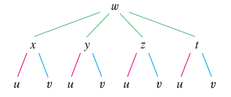

EXAMPLE 4 Write out the Chain Rule for the case
where \(w = f(x, y, z, t)\) and \(x = x(u, v), y = y(u, v), z = z(u, v)\),
and \(t = t(u, v)\).

SOLUTION Figure shows the tree diagram. Although we
haven’t written the derivatives on the branches, it’s understood that if
a branch leads from \(y\) to \(u\), then the partial derivative for that
branch is \(\partial y / \partial u\).
With the aid of the tree diagram, we can now write the required
expressions: \[ \frac{\partial w}{\partial u}
= \frac{\partial w}{\partial x} \frac{\partial x}{\partial u} +
\frac{\partial w}{\partial y} \frac{\partial y}{\partial u} +
\frac{\partial w}{\partial z} \frac{\partial z}{\partial u} +
\frac{\partial w}{\partial t} \frac{\partial t}{\partial u} \]\[ \frac{\partial w}{\partial v} =
\frac{\partial w}{\partial x} \frac{\partial x}{\partial v} +
\frac{\partial w}{\partial y} \frac{\partial y}{\partial v} +
\frac{\partial w}{\partial z} \frac{\partial z}{\partial v} +
\frac{\partial w}{\partial t} \frac{\partial t}{\partial v}
\]